- Visual Studio 2012
- Windows Phone SDK 8.0
- Live SDK for Windows and Windows Phone
- and a Windows Azure account - get the Windows Azure Free Trial
In this sample you will start with a disconnected Windows Store app that manages events & sessions. You will connect it to a Windows Azure Mobile Service to provide structured storage for both event and session entities. The application uses Twitter or Facebook authentication to login to your services. You will finish by sending Live Tiles using push notifications every time an attendee rates a session.
Getting Started with Mobile Services to store data
Open the EventBuddy solution in Visual Studio and run the Windows Store application.
On Event Buddy's home page, click Add Event, enter an event name and click Save Event.
Select the event to view the Event Details.
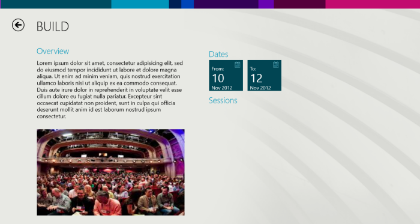
Navigate back to the first screen. Notice that our data is gone. This is because the application is not using Mobile Services yet, and the data is all local and just in memory.
Go back to Visual Studio and stop the app.
To connect your app to Mobile Services open Solution Explorer, right-click the project, click Add and then Connected Service....
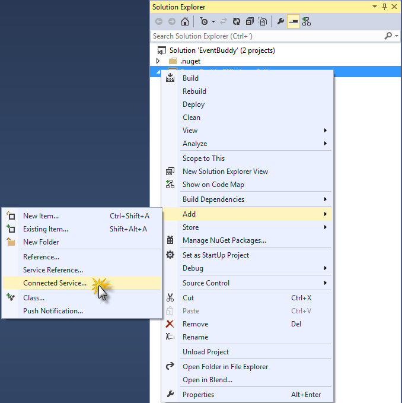
In the Services Manager dialog box, select the Windows Azure > Mobile Services tab and click Create service..., then select Import... from Subscription in the Create Mobile Service dialog box.
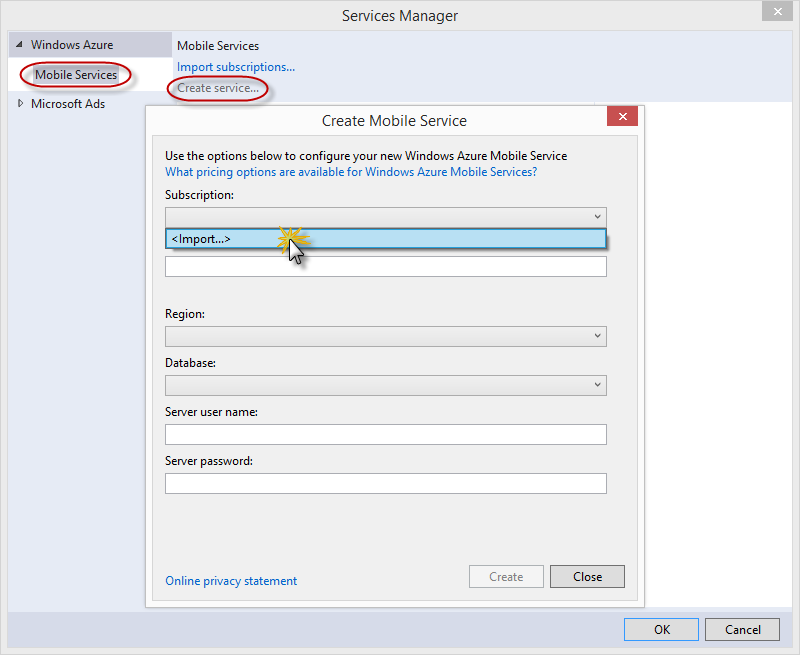
In the Import Windows Azure Subscriptions dialog box, click Download subscription file, log in to your Windows Azure account (if required) and click Save when your browser requests to save the file.
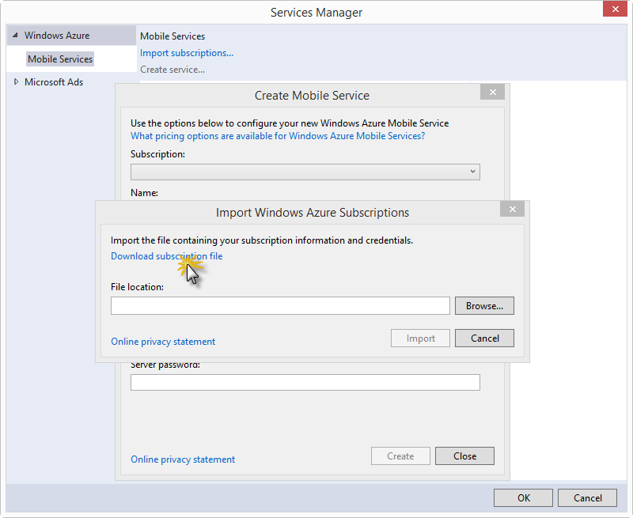
Note: The login window is displayed in the browser, which may be behind your Visual Studio window. Remember to make a note of where you saved the downloaded .publishsettings file. You can skip this step if Visual Studio is already connected to your Windows Azure subscription.
Click Browse, navigate to the location where you saved the .publishsettings file, select the file, then click Open and then Import. Visual Studio imports the data needed to connect to your Windows Azure subscription.
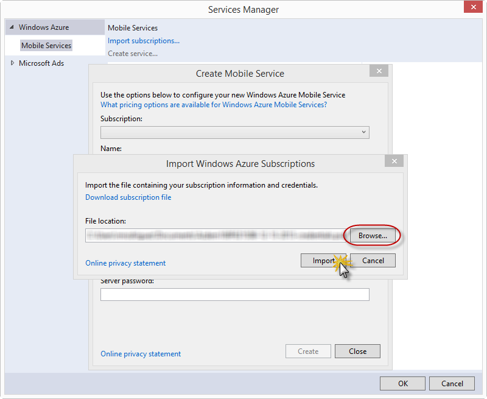
Security Note: After importing the publish settings, consider deleting the downloaded .publishsettings file as it contains information that can be used by others to access your account. Secure the file if you plan to keep it for use in other connected app projects.
Back in the Create Mobile Service dialog, select your Subscription and the desired Region for your mobile service, then type a Name for your mobile service.
Note: Mobile service names must be unique. A red X is displayed next to Name when the name you supplied is not available.
In Database, select Create a free SQL Database, supply the Server user name, Server password, and Server password confirmation then click Create.
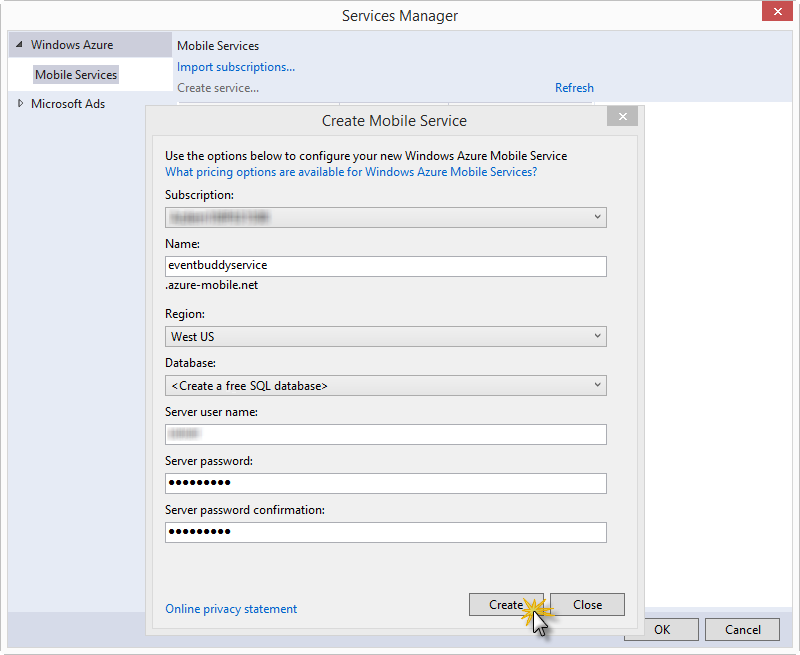
Note As part of this sample, you create a new free SQL database instance and server. You can reuse this new database and administer it as you would any other SQL database instance. You can only have one free database instance. If you already have a database in the same region as the new mobile service, you can instead choose the existing database. When you choose an existing database, make sure that you supply correct login credentials. If you supply incorrect login credentials, the mobile service is created in an unhealthy state.
Alternatively, you can create the mobile service from the Windows Azure Management Portal. Once logged in, navigate to Mobile Services and click New. Then expand Compute | Mobile Service, then click Create and follow the instructions.
In the Services Manager dialog, select the mobile service you just created and click OK.
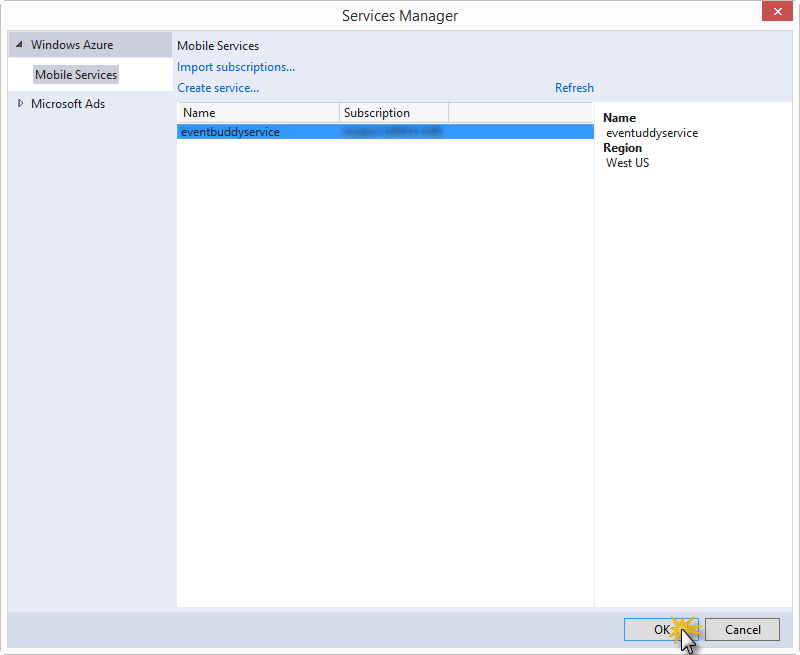
After completing the steps from above, a reference to the Mobile Services client library is added to the project and your project source code is updated.
In Solution Explorer, open the App.xaml.cs code file, and notice the new static field that was added to the App class, which looks like the following example:
public static Microsoft.WindowsAzure.MobileServices.MobileServiceClient eventBuddyServiceClient = new Microsoft.WindowsAzure.MobileServices.MobileServiceClient( "https://eventbuddyservice.azure-mobile.net/", "XXXXXXXXXXXXXXXXXXXXXXXXXXXXXXXXX");
public static Microsoft.WindowsAzure.MobileServices.MobileServiceClient eventBuddyServiceClient = new Microsoft.WindowsAzure.MobileServices.MobileServiceClient( "https://eventbuddyservice.azure-mobile.net/", "XXXXXXXXXXXXXXXXXXXXXXXXXXXXXXXXX");
In Server Explorer, expand Mobile Services under Windows Azure, right-click your mobile service, click Create Table..., and then type Event in Table Name.
Expand Advanced, verify that the table operation permissions default to Anybody with the Application Key, then click Create.
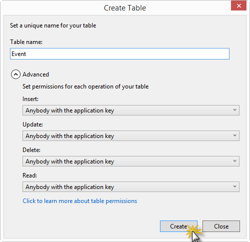
Open EventsPage.xaml.cs. Navigate to the SaveEvent method and locate // TODO: save the new event. Replace it with the following code (replace {yourClient} with the MobileServiceClient field added to the App.xaml.cs file when you connected your project to the mobile service):
await App.{yourClient}.GetTable<Event>().InsertAsync(item);
await App.{yourClient}.GetTable<Event>().InsertAsync(item);
Navigate to the LoadEvents method and locate the comment // TODO: query for existing events. Replace it with the following code (replace {yourClient} with the appropriate field):
Events = await App.{yourClient}.GetTable<Event>().ToEnumerableAsync();
Events = await App.{yourClient}.GetTable<Event>().ToEnumerableAsync();
Run the application from Visual Studio.
Create a new event by clicking on the Add Event link on the home page. Enter an event name and click Save Event in the Add Event dialog box.
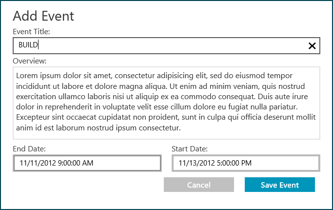
After saving the event, go to the Windows Azure Management Portal and log in with your credentials (if required). Click Mobile Services and then select your mobile service. Navigate to the Data view for the Mobile Service and select the Event table. You will now see that the event data was stored in Windows Azure.
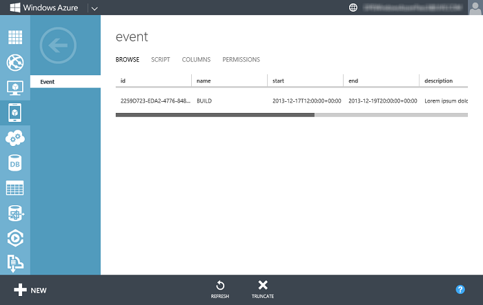
Authentication, Authorization, and Service-Side Scripts
You will now add a table to store our session data. Switch back to Visual Studio and stop debugging.
Open Server Explorer, Expand Mobile Services under Windows Azure, right-click your mobile service and select Create Table.... Create a new table named Session and set the permissions to Only Authenticated Users. By setting this policy you prevent unauthorized users from accessing and modifying this table.
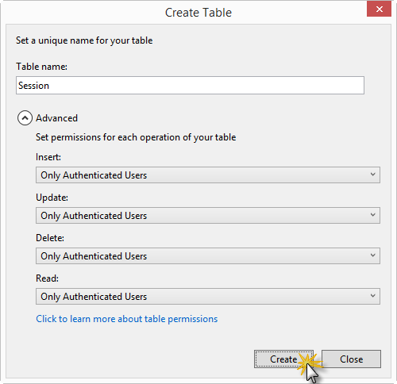
Configure authentication using Twitter or Facebook.
Note: Details on how to configure Mobile Services authentication with identity providers such as Twitter and Facebook can be found at http://code.msdn.microsoft.com/windowsapps/Event-Buddy-ddafd9b6/https://www.windowsazure.com/en-us/develop/mobile/tutorials/get-started-with-users-dotnet/#register.
In Visual Studio, open the Login.xaml.cs file.
In order to enable Twitter authentication, locate the LoginTwitter method and add the following code (replace {yourClient} with the appropriate field):
await App.{yourClient}.LoginAsync(MobileServiceAuthenticationProvider.Twitter);
await App.{yourClient}.LoginAsync(MobileServiceAuthenticationProvider.Twitter);
Note: If you choose to authenticate with Facebook, instead of executing the previous step, add the following code in the LoginFacebook method (replace {yourClient} with the appropriate field):
await App.{yourClient}.LoginAsync(MobileServiceAuthenticationProvider.Facebook);
await App.{yourClient}.LoginAsync(MobileServiceAuthenticationProvider.Facebook);
You will now add the necessary code to save, load and update the session table. Open SessionsPage.xaml.cs.
Navigate to the SaveSession method and locate // TODO: Save Session. Replace the comment with the following code (replace {yourClient} with the appropriate field):
await App.{yourClient}.GetTable<Session>().InsertAsync(item);
await App.{yourClient}.GetTable<Session>().InsertAsync(item);
Navigate to the LoadSessions method and locate // TODO: Query Sessions for selected eventItem.Id. Replace the comment with the following code (replace {yourClient} with the appropriate field):
Sessions = await App.{yourClient}.GetTable<Session>().Where(e => e.EventId == Event.Id).ToEnumerableAsync();
Sessions = await App.{yourClient}.GetTable<Session>().Where(e => e.EventId == Event.Id).ToEnumerableAsync();
Navigate to the UpdateSession method and locate // TODO: Update Session. Replace the comment with the following code (replace {yourClient} with the appropriate field):
await App.{yourClient}.GetTable<Session>().UpdateAsync(item);
await App.{yourClient}.GetTable<Session>().UpdateAsync(item);
In Server Explorer, expand the Session table of your mobile service. Then right-click the insert.js script file and select Edit script.
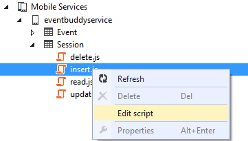
The script opens in an editor window. Here you can insert a JavaScript function that is going to be invoked whenever someone performs an insert. And it expects the item that is being inserted and the user (which has been verified and authenticated on the server so you can trust the data inside that object).
Update the insert script to the below code. This JavaScript will simply go out to Twitter's APIs, retrieve the profile picture for the speaker using the speaker's Twitter account, and store the URL of the picture with the session record. Make sure to replace the placeholders with your Twitter's consumer key and consumer secret.
function insert(item, user, request) {
item.userId = user.userId;
if (item.speaker) {
// get these from https://dev.twitter.com/apps
var twitterConsumerKey = "{YourAppsConsumerKey}";
var twitterConsumerSecret = "{YourAppsConsumerSecret}";
// This works for users signed in with Twitter auth, otherwise
// you can use your own values for this from https://dev.twitter.com/apps
// these are on the same page under "your access token" section
user.getIdentities({
success: function (identities) {
var userToken = identities.twitter.accessToken;
var userSecret = identities.twitter.accessTokenSecret;
console.log('identities: ', identities);
console.log('userToken: ', userToken);
console.log('userSecret: ', userSecret);
var OAuth = require('OAuth');
var oauth = new OAuth.OAuth(
'https://api.twitter.com/oauth/request_token',
'https://api.twitter.com/oauth/access_token',
twitterConsumerKey,
twitterConsumerSecret,
'1.0A',
null,
'HMAC-SHA1'
);
oauth.get("https://api.twitter.com/1.1/users/show.json?screen_name=" + item.speaker, userToken, userSecret,
function (error, data) {
//console.log("error: ", error);
console.log("data: ", data);
if (data) {
var json = JSON.parse(data);
if (json.profile_image_url) {
var biggerImg = json.profile_image_url.replace("normal", "bigger");
item.img = biggerImg;
request.execute();
} else {
item.img = "Assets/NoProfile.png";
request.execute();
}
} else {
item.img = "Assets/NoProfile.png";
request.execute();
}
});
},
error: function (error) {
console.log("getIdentities error: ", error);
item.img = "Assets/NoProfile.png";
request.execute();
}
});
}
else {
item.img = "Assets/NoProfile.png";
request.execute();
}
}
function insert(item, user, request) { item.userId = user.userId; if (item.speaker) { // get these from https://dev.twitter.com/apps var twitterConsumerKey = "{YourAppsConsumerKey}"; var twitterConsumerSecret = "{YourAppsConsumerSecret}"; // This works for users signed in with Twitter auth, otherwise // you can use your own values for this from https://dev.twitter.com/apps // these are on the same page under "your access token" section user.getIdentities({ success: function (identities) { var userToken = identities.twitter.accessToken; var userSecret = identities.twitter.accessTokenSecret; console.log('identities: ', identities); console.log('userToken: ', userToken); console.log('userSecret: ', userSecret); var OAuth = require('OAuth'); var oauth = new OAuth.OAuth( 'https://api.twitter.com/oauth/request_token', 'https://api.twitter.com/oauth/access_token', twitterConsumerKey, twitterConsumerSecret, '1.0A', null, 'HMAC-SHA1' ); oauth.get("https://api.twitter.com/1.1/users/show.json?screen_name=" + item.speaker, userToken, userSecret, function (error, data) { //console.log("error: ", error); console.log("data: ", data); if (data) { var json = JSON.parse(data); if (json.profile_image_url) { var biggerImg = json.profile_image_url.replace("normal", "bigger"); item.img = biggerImg; request.execute(); } else { item.img = "Assets/NoProfile.png"; request.execute(); } } else { item.img = "Assets/NoProfile.png"; request.execute(); } }); }, error: function (error) { console.log("getIdentities error: ", error); item.img = "Assets/NoProfile.png"; request.execute(); } }); } else { item.img = "Assets/NoProfile.png"; request.execute(); } }
Note: Take into account that in order to show an update and retrieve a new Twitter handler picture, you must paste the above code into the update.js script, and rename the function to update. This way, whenever you change a session with a different Twitter handle, the new picture URL will be retrieved and saved.
Press Ctrl+S to save the changes to the script and wait until it is successfully saved.
Run the Windows Store application.
Right-click or swipe up to view the app bar. Select Login from the app bar and select Twitter from the list of login options. (You can also use Facebook to authenticate.)
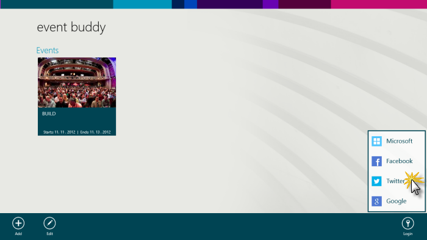
You should see the Twitter login page load in the center of the application. Enter your Twitter username and password and click Sign In.
Click on the existing Event created in the previous Segment. Right click or use the swipe gesture to expose the bottom AppBar and click Add Session.
Add a session name and speaker name (which should be their twitter handle) in the Add Session window. Click Save Session.
You should see the session added and the Twitter picture of the speaker displayed with the session details.
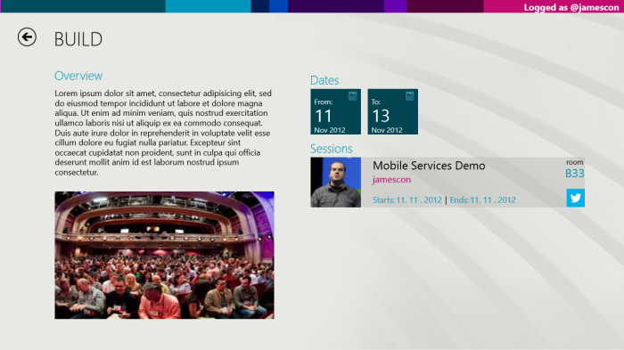
Push Notifications
You will now update EventBuddy in order to allow attendees to be able to rate sessions. Once they rate a session, the speaker will receive a live tile update which shows the rating.
Go back to Visual Studio and stop debugging. In Solution Explorer, right-click the Windows Store project, click Add and then Push Notification.... This starts the Add Push Notification Wizard.
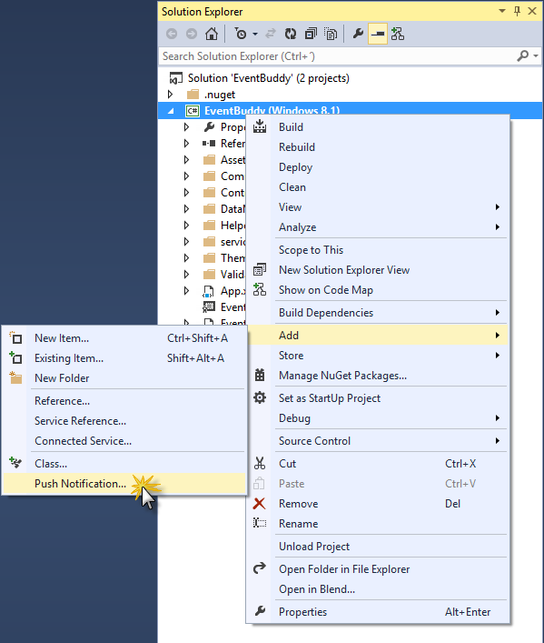
Click Next, sign in to your Windows Store account, then supply a name in Reserve a new app name and click Reserve.
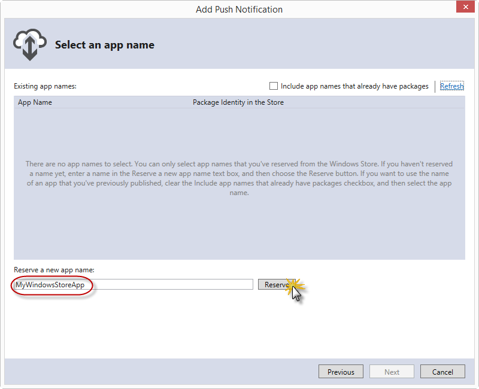
Click the new registration in the App Name list, then click Next.
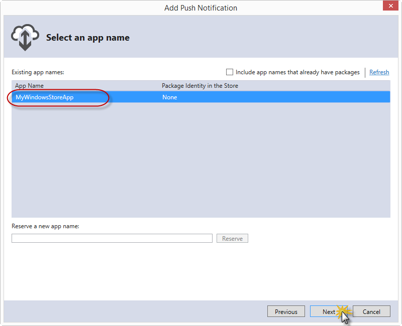
Click the name of the mobile service that you created, then click Next and Finish.
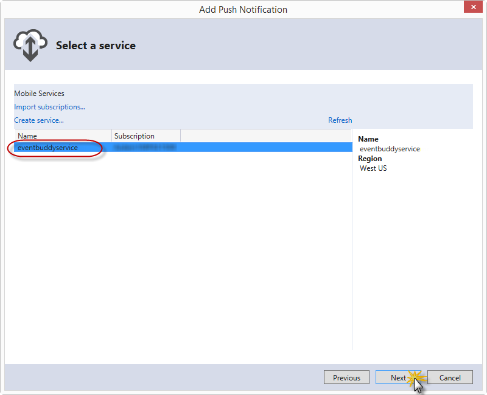
The mobile service is updated to register your app package SID and client secret and a new channels table is created. Mobile Services is now configured to work with Windows Push Notification Services (WNS) to be able to send notifications to your app.
In Solution Explorer, expand services, mobile services, your service name, and open the generated code file. Inspect the UploadChannel method that obtains the installation ID and channel for the device and inserts this data into the new channels table.
A call to this method was also added by the wizard to the OnLaunched event handler in the App.xaml.cs code file. This ensures that registration of the device is attempted whenever the app is launched.
However, the Event Buddy application requires each registered channel to be associated with the authenticated user. This means that the channel registration should take place only when the user logs in, and not when the app is launched. Open App.xaml.cs and locate the UploadChannel call at the bottom of the OnLaunched method. Make note of that line and delete it from the OnLaunched method.
Open EventsPage.xaml.cs and locate the onLoggedIn method. Paste the UploadChannel call at the top of the method. The updated method should look like the following:
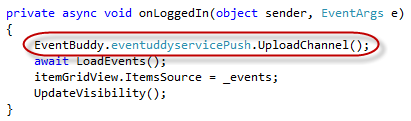
In Server Explorer, expand Windows Azure, Mobile Services, your service name, and channels. Then, open the insert.js file. This file contains JavaScript code that is executed when a client sends a request to register a device by inserting data into the channels table; it checks for an existing registration for the device, and also contains code that sends a push notification when a new registration is added to the channels table
In the insert script, locate the line that calls to sendNotifications and comment it out, or remove it.
Add the following code right after the line of code you commented in the previous step to associate the channel to the authenticated user.
item.userId = user.userId;
item.userId = user.userId;
The updated insert script should look like the following:
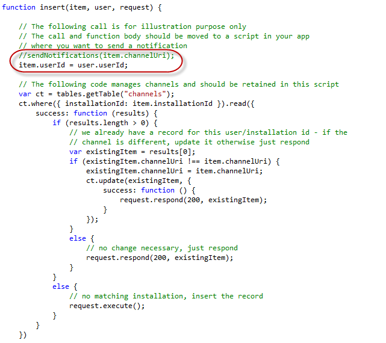
Press CTRL+S to save the script.
Create a new table to store ratings. In Server Explorer, right-click your mobile services and select Create Table.... Name it Rating and set permissions to Only Authenticated Users.
In Server Explorer, expand the Rating table, open the insert.js file and replace the current insert function with the following code.
function insert(item, user, request) {
request.execute({
success: function() {
request.respond();
sendNotifications(item, user);
}
});
}
function sendNotifications(item, user) {
var sql = "SELECT DISTINCT c.channelUri, s.name FROM channels c " +
"INNER JOIN Session s ON c.userId = s.userId AND s.id = ?";
console.log(sql, item.sessionId);
mssql.query(sql, [item.sessionId], {
success: function(results) {
console.log(results);
if (results.length === 0)
{
return;
}
var channels = results.map(function(r) { return r.channelUri });
push.wns.sendTileWideSmallImageAndText04(channels, {
image1src: item.imageUrl,
text1: item.rating + " stars",
text2: item.raterName + " just rated your session '" + results[0].name + "'"
},
{ success: console.log });
}
});
}
function insert(item, user, request) { request.execute({ success: function() { request.respond(); sendNotifications(item, user); } }); } function sendNotifications(item, user) { var sql = "SELECT DISTINCT c.channelUri, s.name FROM channels c " + "INNER JOIN Session s ON c.userId = s.userId AND s.id = ?"; console.log(sql, item.sessionId); mssql.query(sql, [item.sessionId], { success: function(results) { console.log(results); if (results.length === 0) { return; } var channels = results.map(function(r) { return r.channelUri }); push.wns.sendTileWideSmallImageAndText04(channels, { image1src: item.imageUrl, text1: item.rating + " stars", text2: item.raterName + " just rated your session '" + results[0].name + "'" }, { success: console.log }); } }); }
Note: This script uses a bit of SQL to look up the Channel URI and name for the current user from the Channel table. This channel information is used by Windows Notification Services to send a push message to a specific user. Once it has the channel information, it will call out to the Windows Notification Service with one line of code and send a push notification to the client application.
Press CTRL+S to save the changes to the server-side script.
Open the App.xaml.cs file in the Windows Store project and locate the mobile service's static field declaration at the top of the App class. Make note of the mobile service url and mobile service key.
Open the App.xaml.cs file in the Windows Phone 8 project and replace the placeholders {mobile-service-url} and {mobile-service-key} with the values obtained in the previous step.
Go back to Visual Studio and run the Windows Store app.
You will now pin the EventBuddy app to the start screen, so you can see when the push notifications arrives:
If you are using the Windows Phone emulator, run the Windows Phone 8 project from Visual Studio in order to start the app in the emulator. If you are using a Windows Phone device, start the Event Buddy app from the device.
In the Event Buddy Windows Phone 8 app, log in and select the event that you created earlier. Then select a session to view the session details.
Rate a session by selecting 1-5 stars.
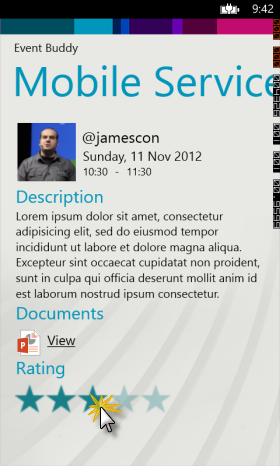
Go to the Windows 8 Start Screen. Notice that the Event Buddy tile is updated with the session and rating information.
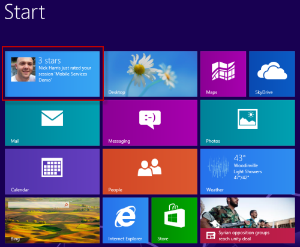
When trying to send a push notification using the Windows Phone 8 application, the client might not receive the notification. This is likely caused by not having registered the application in the Windows Store (this is being done by Visual Studio as part of the process that configures Push Notifications).
If you review your Mobile Services logs you might find the following error:
Error in script '/table/Rating.insert.js'. Error: The cloud service is not authorized to send a notification to this URI even though they are authenticated.
Follow the steps in the Running the Sample section of this document, to add Push Notifications to the application to resolve the issue.
EventBuddy allows users to associate files to sessions by uploading them to SkyDrive. However, if you try to upload a file to SkyDrive and you receive a message saying that there was an error while logging in to Skydrive, it is likely by not having registered the application in the Windows Store (this is being done by Visual Studio as part of the process that configures Push Notifications).
When uploading a file with the Windows 8 application, the download link returned by the Skydrive API expires in 1 hour. After an hour has passed, you won't be able to download the file with your Windows Phone client.
In this sample you've seen how a developer can quickly connect an offline application to the cloud to store data and add support for authentication. You've seen how easily you can connect different devices to the same services and interact with them using push notifications.
Want to see More Windows Store app samples using Windows Azure Mobile Services - check out the full listing. If you cant find a specific Windows Azure Mobile Services scenaro in the full listing please feel free to reach out to me on Twitter via @cloudnick